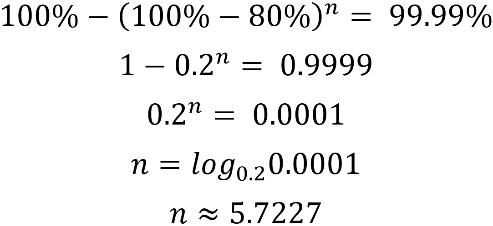
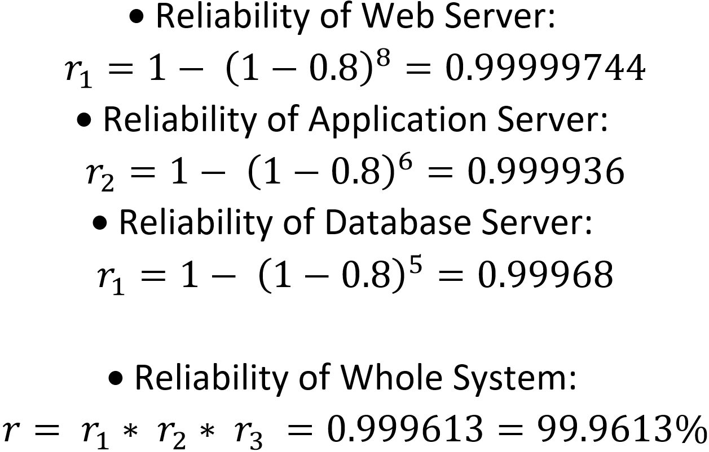

The number of nodes required for Web server cluster to achieve 99.999% reliability:
The number of nodes required for Application server cluster to achieve 99.99% reliability:
The number of nodes required for Database server cluster to achieve 99.9% reliability:
After the above calculations, the number of required nodes is invalid, meaning that there is no possible way to route the nodes in tandem routing to achieve the reliability requirements.
The number of nodes required for Web server cluster to achieve 99.999% reliability:
The number of nodes required for Application server cluster to achieve 99.99% reliability:
The number of nodes required for Database server cluster to achieve 99.9% reliability:
After the above calculations, the number of nodes required for Web Server is 8 computers; the number of nodes required for Application Server is 6 computers; the number of nodes required for Database Server is 5 computers.
The computers in each tier must be routed in parallel method.
Conclusion:
In the initial requirements, the reliability of the whole system is:
In the proposed solution, the reliability of the whole system is:
Since an E-commerce system is expected to serve reliably in long-term operation. It should not only provide high availability, speed and accuracy, but also offer the ability to be scaled when business grows. When scaling the system, it is essential to make sure that services are still accessible (ie. customers can still shop on the website and other features work like normal). Although some downtimes may happen, but they should not occur frequently or take long. Beside that, the costs and efforts for expanding system should not be significant, meaning the architecture and design of the system must be relevant in long run.
With parallel routing of the nodes for each server cluster, the system can warrant all of the above requirements. If any node in the system (or each server cluster) malfunctions or becomes broken, it can be shut-downed and replaced without affecting the services because other nodes are still available to process the requests. When the business makes profits, and wants to improve their servers by replacing the 80%-reliable computers with higher reliable ones or more energy efficient ones, they can swap the nodes at different times.
As the reliability of each node is only 80%, so the likeliness that a node would fail is high if it receives high workload. Therefore to further increase the reliability of the whole system, the company should have a Load Balancer cluster to distribute requests evenly to each server and each node. In addition, the company can also use a Message Queue software to deliver the work when there are available resources in the server/node while ensuring the priority of the tasks.